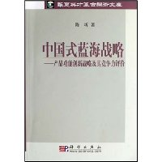

中国式蓝海战略——产品功能创新战略及其竞争力评价 详细目录 -hxzon爱读书
 http://ec4.images-amazon.com/images/I/41AAA2eJH2L._AA200_.jpg
作者: 陈圻
详细目录
前言
第1章 导论——产品功能创新、蓝海战略和竞争力
1.1 中国式蓝海战略
1.2 蓝海战略、竞争与竞争力
1.3 产品功能创新与功能竞争力概要
1.4 本书结构与导读
上篇 开创功能蓝海——产品功能创新战略与技法
第2章 产品功能创新和动能创新战略
2.1 产品功能和功能创新
2.2 产品功能创新战略概论
2.3 产品功能系统描述和创新工具——功能空间与功能谱
2.4 功能创新战略的模式
2.5 功能创新方案的制定与实施
2.6 功能创新设计技法与联动创新概览
2.7 功能创新与价值创新战略比较
第3章 功能创新设计技法
3.1 功能组合创新设计技法
3.2 功能匹配创新设计技法
3.3 功能成本规划与联动创新
第4章 产品功能联动创新——研究与案例
4.0 功能创新-技术创新联动：变频调速器案例
4.2 功能创新-品牌创新联动：“午夜妖姬”案例
4.3 功能创新-工业设计创新联动：电动自行车案例
下篇 评价功能竞争力——产品竞争力驱动因素研究
第5章 产品竞争力与产品功能竞争力
5.1 竞争力与产品竞争力
5.2 产品竞争力驱动因素理论
5.3 关键驱动因素竞争力概念与理论
5.4 驱动因素创新与功能创新
5.5 功能竞争力研究概要
第6章 制造业产品竞争力驱动因素调查与统计分析
6.1 驱动因素的调查与统计方法概述
6.2 基于零售商调查的消费品竞争力驱动因素统计分析
6.3 基于消费者调查的产品竞争力驱动因素统计分析
6.4 基于消费者评价的产品竞争力定量评价
第7章 制造业产品功能竞争力专题案例研究
7.1 解读大规模定制：产品功能导向的竞争动力学
7.2 “功能淘汰”现象研究
7.3 功能淘汰案例调查研究——来电显示电话机
第8章 功能型产品的竞争力研究
8.1 功能型产品的竞争力研究概述
8.2 功能型产品案例研究——磁带语言复读机(一)：产品与销售调查
8.3 功能型产品案例研究——磁带语言复读机(二)：消费者调查
第9章 产品功能竞争力理论模型研究
9.1 产品功能创新的现代效用评价模型
9.2 基于产品功能创新的企业竞争动力学模型研究
9.3 基于产品功能系统构成演化的伯川德均衡模型
第10章 总结与展望
10.1 中国式蓝海战略的精华
10.2 中国式蓝海战略展望
参考文献
附录
附录1 目标成本分解与创新重点选择公式简要推导(第3章)
附录2 制造业产品竞争力驱动因素调查统计分析表(第6章)
附录3 功能淘汰案例——来电显示电话机调查问卷和部分统计分析表(第7章)
附录4 功能型产品案例——磁带语言复读机调查问卷和部分统计分析表(第8章)
致谢
=================================
前言
也许你已经知道“蓝海战略”，W. 钱·金、勒妮·莫博涅的国际畅销书《蓝海战略》已经为许多中国读者熟知，也成为我国企业界谈论的热点话题。但你听说过中国式蓝海战略吗？你思考过如何开创中国式“蓝海”吗？开创蓝海是中国企业发展的急需，因为中国企业对近年来深陷红海的相互恶性竞争有切肤之痛。我们思考的焦点是如何适应中国国情，如何开创中国式蓝海战略，而不是邯郸学步、东施效颦。本书就是第一本全面论述中国式蓝海战略的专著。
中国有成功的蓝海吗？它在哪里？《蓝海战略》出版以来不过一年多，国内就有多本谈蓝海的书火速应市，出现了速成的蓝海战略专家。然而不少书其实就是“案例快餐”——昨天的故事都成了中国蓝海案例，读读可以消遣，却未必能告诉企业和学生有用的知识：究竟什么是蓝海战略？中国的蓝海在哪里？
严肃的问题是：《蓝海战略》适用于中国吗？既然价值创新是实现蓝海战略的手段，那么如何将它用到中国？更令人关注的是：如何适应中国国情实现蓝海战略？本书的回答是：恰好本书作者已经致力于研究功能创新战略15年，实践和研究过一批中国案例，总结出了系统的可操作方法。按照蓝海战略的思路，功能创新战略正是与价值创新异曲同工地实现蓝海战略的另一种有力工具，而它的现有的成果和案例大多数是成长在中国大地上的！
“众里寻她千百度，蓦然回首，那人却在灯火阑珊处。”原来中国已经有一些真正成功的蓝海实例！原来中国早已有中国式蓝海战略实现途径的研究！
从1980年代末开始，我在从事研究工作、不断学习和探索的过程中逐渐形成了自己的研究方向，其中一个最重要的研究方向，就是对产品功能创新和功能对产品竞争力影响这一新课题的研究，它贯穿了我十几年的研究工作。这十几年中，我作为项目负责人，先后承担了几个国家级和省部级的相关研究项目，现在已经先后结题了，形成了各自的项目研究报告，先后发表了几十篇论文，也为企业做过顾问和培训。与此同时，我积极关注国内外相关的研究进展。金钱、莫博涅两位教授多年来以“价值创新”为主题发表了一系列研究论文，他们有重要影响的论文在《哈佛商业评论》发表后，就引起了我的注意，我是最先在国内学术期刊上发表介绍“价值创新”文章的作者之一，并在文章中将价值创新、功能创新和价值工程进行了初步比较。“价值创新”和本书作者从事的“功能创新”战略的目标和内容确有很多相似之处。现在，W. 钱·金、勒妮·莫博涅两位教授又提出蓝海战略的概念，将价值创新的思想精髓归结为蓝海战略，价值创新则成为实现蓝海战略的有力手段。在中国，从大量本土案例提炼出来的功能创新方法就成为实现中国式蓝海战略的有力手段。
在全球化浪潮中，加入WTO与进一步改革开放，国际国内新挑战叠起，企业成本迅速上升、人民币升值、内需不足、国际反倾销……尤其是近年来国内恶性价格竞争愈演愈烈，使企业界和学术界痛感寻求新的战略思维的迫切性，对《蓝海战略》一书的超乎寻常的关注反映了这一战略反思。为这一场战略反思贡献思想，为中国的发展和崛起尽绵薄之力，是我义不容辞的匹夫之责！华夏英才基金的热情支持下，我鼓起勇气，开始拟定计划，写书全面阐述功能创新战略思想，加入当前的这一场战略反思运动。为此我重读和整理我和项目组十几年来积累的研究资料、报告和论文，尽我的能力将其整合、完善，在可能的情况下做一点提高，融入我新的感悟，诚惶诚恐地将我的一点心得奉献给各位读者评判，这就是读者看到的这一部书稿。
在这里，我想对本书的书名和思路作一点说明。
什么是蓝海战略？按照《蓝海战略》的副题——“超越产业竞争，开创全新市场”，蓝海战略就是避免在现有市场格局中与竞争对手在血腥的“红海”中做“硬碰硬”的竞争，通过全新的产品跨越产业界限，创造全新的、还没有竞争对手的市场，以启动和保持企业的营利性增长，这也就是“价值创新”的一贯思想。
而功能创新的基本出发点就是：产品和产业不过是实现用户所需要的功能的载体和手段。从功能出发，而不是从既定的产业出发，通过重新界定用户所需要的功能，重组产品的功能系统，摆脱以行业和技术惯例为中心的思维模式，才能创造满足消费者需求的新产品和新产业，开辟新的“战略性功能市场”和新的产业格局，以实现企业的再度辉煌。
可以看出，功能创新与价值创新的基本思想是相似的，它们都是实现蓝海战略的基石。而功能创新是生长在中国大地的、以大量本土案例为基础的战略，更加贴近中国国情和中国企业的需要，因此可以说功能创新是中国式的蓝海战略。
在研究功能创新战略的同时，我们还对产品功能和功能创新的竞争力进行了大量深入的实证研究和评价，以大量数据和实例证明产品功能和功能创新对企业竞争力的深刻影响，并初步建立了理论模型，从而使功能创新战略建立在可靠的科学基础上。产品功能创新战略和功能竞争力评价的研究就成为本书两个相互支撑的有机组成部分，这就是本书书名的由来。
在我的研究中，多数案例是制造业产品案例，这并不意味着功能创新战略只适用于制造业，书中同样有其他产业的案例，可以预期在我国服务业发展中它会有更为广阔的应用前景。案例选择是现阶段制造业在我国经济和出口贸易中的重要地位使然，也与我个人的经历有关。文革期间我曾在工厂工作多年，后来又先后在几所工科院校学习和执教，在工程氛围的熏陶下，从最初尝试研究改进产品设计的价值工程原理，到研究功能创新和功能设计方法，都是以制造业为主要背景的；及至研究功能对制造业竞争力的影响，更是以制造业为直接对象。在历史上，制造业曾经是欧美产业革命的主力军；新世纪，世界已经进入了信息时代。但我国的工业化还未完成，发展制造业，真正成为世界制造大国、制造强国任重道远，研究制造业产品功能创新意义重大。
功能创新将战略执行深入到广义的产品设计层次，这就是功能设计，它具有较强的可操作性，这是功能创新的另一个突出特点。广义的产品设计不仅指制造业，也适用于服务业。就制造业而言，要增强我国制造业产品在国内外市场上的竞争力，就必须增强自主开发设计能力。但这不只取决于技术，还必须依靠产品开发战略方面的创新，这方面我国与先进国家差距同样巨大。按照本书的研究，无论什么行业，产品竞争力总是体现在产品适销（适用）的功能配置（包括实用、外观和象征功能）、优良的质量和相对较低的价格（成本）等方面，而这些因素很大程度上在开发设计阶段就被决定了（当然它们能否实现还取决于制造乃至于销售）。吴邦国同志曾在为工业设计所作的批示中指出：工业设计“不仅要确保产品的技术功能，而且要给人以美的享受” ，“这方面我与国外先进企业差距很大，应予重视，否则会影响我产品竞争力”。这一重要批示指出了产品技术功能和美学功能对产品竞争力的影响，为提高我国制造业产品竞争力指出了努力的途径，对服务业也有深刻的启示。
在本书终于脱稿的时刻，我心潮起伏，多少年来的学习、调查、研讨和伏案工作的情景历历在目。在此难忘时刻，我谨向所有鼓励和帮助过我坚持研究工作的人表示诚挚的感激之情，对被本书所引用的国内外成果的作者谨致谢意。当然，本书中引用的著述我都加以注明，而讹误和缺陷完全由我本人负责，并借本书出版之际向所有读者诚恳地征求对本书的批评意见。
作 者